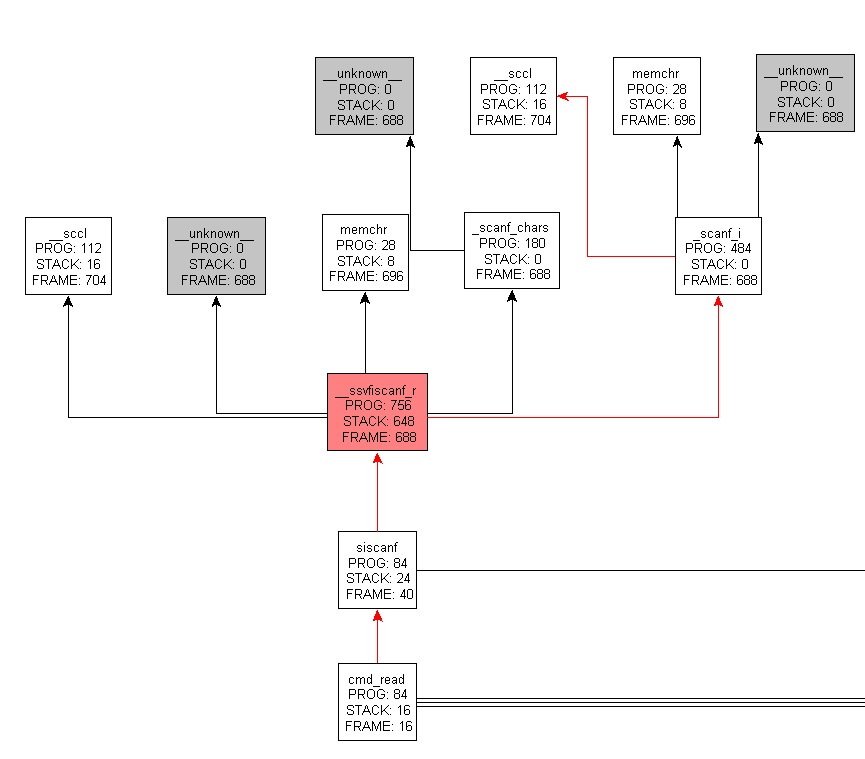
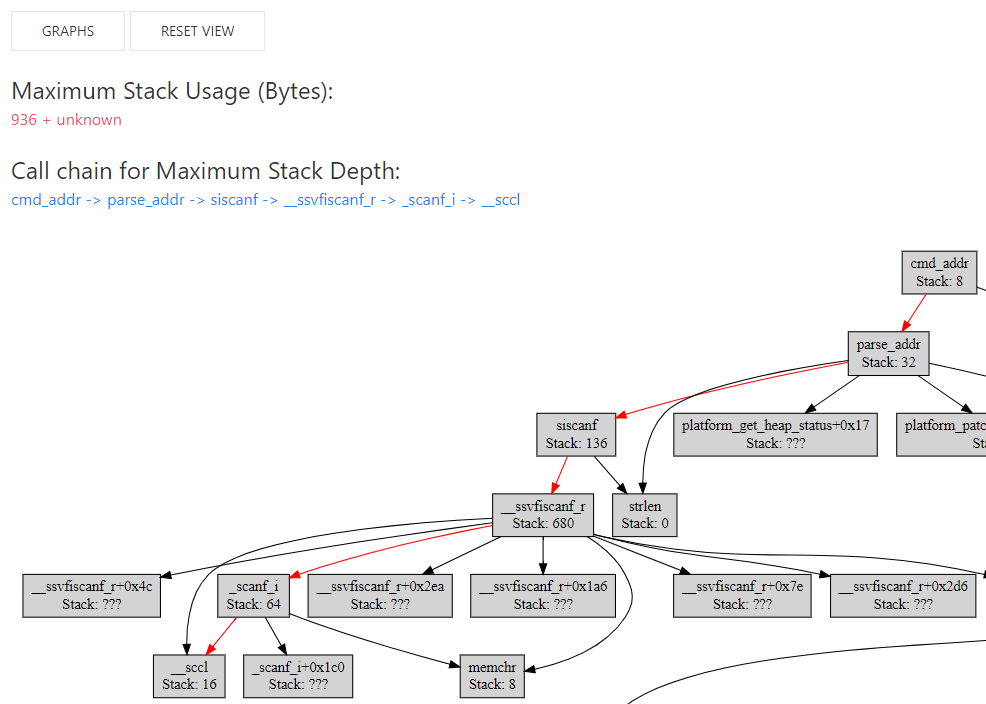

TL;DR: Gnu Arm Toochain 某些库函数栈占用较多。我们开发了 Web 版函数调用图工具、 提供新的 API （SDK 5.3.0），“动静”结合帮助开发者发现并规避栈溢出问题。
SDK 中的示例以 Keil 为主，如果使用的开发环境不是 Keil，可参照以下步骤快速移植。
GCC 项目移植
我们以 Gnu Arm Toolchain 为例，移植 SDK 里的“UART GATT Console”示例（这个示例演示了 GATT Client
各种 API 的使用）。具体移植步骤如下。1) 使用 ingWizard 创建一个全新的 Gnu Arm Toolchain 项目；
2) 备份 main.c 里的 _write 函数；3) 将 UART GATT Console 示例下除 startup_ing91800.s
外的所有源代码复制到新建项目目录下；4) 用备份的 _write 函数替换掉 main.c 里的 fputc 函数；
5) 修改 makefile，将新的源文件 src/uart_console.c 追加到变量 PROJECT_FILES:
PROJECT_FILES = src/main.c
PROJECT_FILES += src/profile.c
PROJECT_FILES += src/uart_console.c
...
编译下载成功，移植工作完成。
栈溢出分析
找到另外一个 BLE 设备，假设其地址 c3:32:33:4e:5d:7c。在串口输出 conn c3:32:33:4e:5d:7c
命令发起连接后，在串口马上看到以下输出：
HARDFAULT:
PC : 0x0001D734 // <- 位于 platform.bin
LR : 0x0001D319
PSR: 0x21000200
R0 : 0x00000017
R1 : 0x000258BC
R2 : 0x00000000
P3 : 0x0000FFFF
R12: 0x20001CA8
PC 找向 platform.bin 的某处。由于 Keil 版的示例不存在这个 HardFault，所以我们怀疑跟编译工具链有关。
在 platform.bin 内部出现 HardFault 往往是发生了内存溢出。由于这个问题是移植代码时出现，基本可以确认为栈溢出。
Arm 社区的一篇博客 详细介绍了程序所需栈空间大小的评估方法。
对于 GCC，编译时模块加上 -fstack-usage 开关时，除了生成“.obj”目标文件，还会产生一个“.su”栈信息文件。
将这个开关放到 CFLAGS，重新编译，发现并未生成“.su”文件。因为 -fstack-usage 开关在编译时而非链接时生效，
而 makefile 里指定了 -flto，编译时无法获取准确的栈占用信息，所以无法生成“.su”文件。
去掉 -flto “.su” 文件就可以生成了。截取 uart_console.su 里一段如下，使用的栈空间很小：
src/uart_console.c:130:5:parse_addr 24 static
src/uart_console.c:148:6:cmd_addr 8 static
由于 -fstack-usage 工作在编译期，无法统计库函数的栈空间大小。直接下载 Gnu Arm Toolchain
的源代码，
发现 newlib/newlib-nano 里 sscanf 的核心代码需要很多栈空间：
int __SVFSCANF_R (struct _reent *rptr, register FILE *fp,
char const *fmt0, va_list ap)
{
// ...
char ccltab[256]; /* character class table for %[...] */
// ...
char buf[BUF]; /* buffer for numeric conversions */
// ...
}
为了获取更全面的栈信息，我们找到了一个名为 callgraph-gen
的工具。先 objdump 反编译 axf，然后用这个工具生成函数调用图。查看生成的 VCG 发现很多函数的栈空间占用为 0，
对比 callgraph-gen 里识别栈操作的正则表达式 与反编译结果可发现这个工具无法识别
stmdb、sub.w 等指令，所以报告的栈空间占用为 0。为了尽快看到一些结果，直接将反汇编里的 sub.w 替换为
sub，再次生成函数调用图，显示这个 __SVFSCANF_R 至少 使用了 648 字节：

静态分析：Web 版工具
鉴于这个 callgraph-gen 存在上述问题，而且生成的图形 VCG 或者 DOT 图形还需要其它工具才能查看，使用不便，
我们专门开发了一个全新的 Web 版调用图工具 callgraph。
用这个工具可以直观看到栈空间占用最大的路径，生成的 Graphviz/DOT 图里对这个路径作了高亮处理，非常直观：

对比 Keil，整个 cmd_addr 函数链仅消耗 288 字节，近 700 字节或许就是使用 Gnu Arm Toolchain 所要付出的“免费”的“代价”。
动态分析：栈 API
为了更好地支持 Gnu Arm Toolchain，SDK 5.3.0 中将引入一个新的 API platform_install_isr_stack，使用这个
API 可以设置一个更大的 ISR 专用栈。同时提供了一个新的 platform_tools 模块，利用这个模块，
开发者可以在程序运行期准确地统计函数使用的栈空间。对于 Task 栈，开放了一个新的 API uxTaskGetStackHighWaterMark，
开发者使用这个 API 可以评估各个 Task 运行期时的栈空间使用情况，避免栈溢出。
使用 platform_tools 模块计算出 sscanf 运行期间实际使用的栈空间为 872 字节。
int parse_addr(uint8_t *output, const char *param)
{
// ...
platform_stack_status_t status;
platform_instrument_isr_stack(&status);
if (sscanf(param, "%x:%x:%x:%x:%x:%x", &addr[0], &addr[1], &addr[2],
&addr[3], &addr[4], &addr[5]) != 6)
{
tx_data(error, strlen(error) + 1);
return -1;
}
platform_printf("STACK used by sscanf: %d\n",
status.bytes_minimum_ever_free - platform_instrument_isr_stack(NULL));
// ...
}
总结
利用 Web 版函数调用图工具 和提供新的 API，静态分析和动态跟踪相结合， 可以帮助开发者发现、定位、规避栈溢出问题。